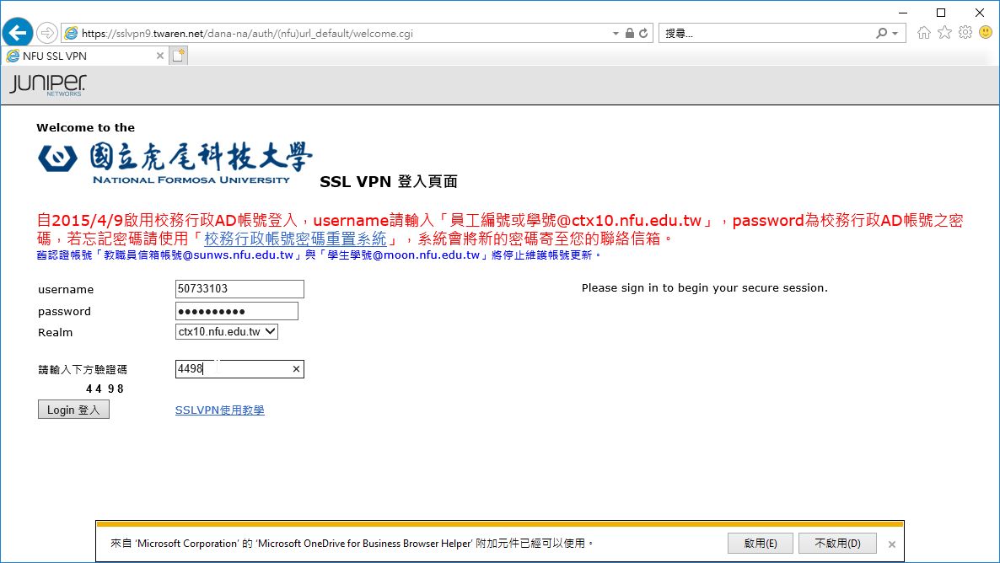

安裝完並開啟SSL VPN程式(Juniper Networks Connect
點擊Network Connect
執行程式後,於登入頁面輸入網址
輸入使用者帳密(填入校務行政AD及密碼)
出現"設定控制-警告"視窗,按下"是"
螢幕右下角顯示"已連接" 表示已成功連線
請在IE瀏覽器上按下右鍵 使用"以系統管理員身分執行" IE網認證:在IE瀏覽器上按下右鍵 使用"以系統管理員" 登入頁面輸入： https://sslvpn9.twaren.net/nfu，按下「執行」，會出現帳號與密碼登入欄位。 填入虎尾科技大學的校務行政AD帳號及密碼，並請輸入下方驗證碼，進行身份確認。 填寫您在虎尾科技大學的校務行政AD帳號以及密碼 填寫完畢以後按下Login登入就會開始進行身份確認，請稍後一段時間。

以上的資訊皆來自https://nfucc.nfu.edu.tw/index.php/zh/download/download-network/ssl-vpn